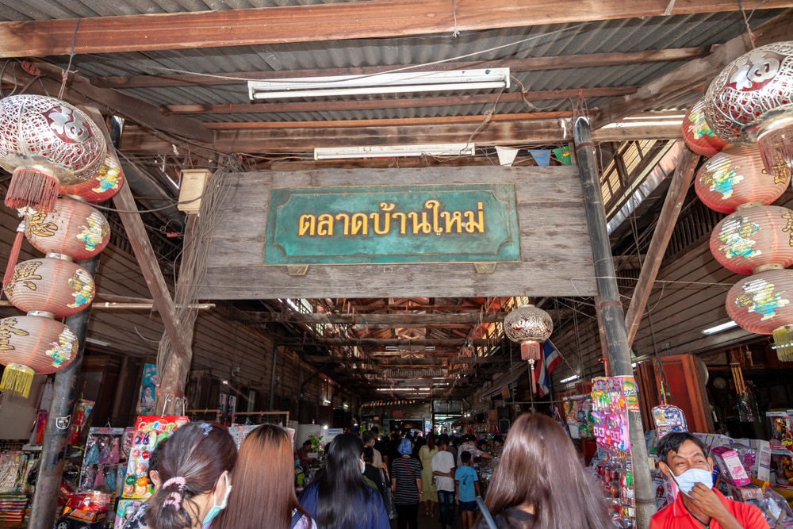

ตลาดบ้านใหม่
ตลาดบ้านใหม่ร้อยปี ตั้งอยู่ในเมืองแปดริ้ว หรือฉะเชิงเทรา ที่นี่เป็นตลาดริมแม่น้ำบางปะกงที่มีมาตั้งแต่ในสมัยรัชกาลที่ 5
เลยทีเดียว เรียกได้ว่า เป็นตลาดเก่าที่มีอายุร้อยปีกว่าแล้วนั่นเอง ที่นี่เป็นชุมชนริมน้ำที่เคยมีการค้าขายกันอย่างคึกคักในสมัยเก่า
แต่เมื่อเริ่มมีการตัดถนน ก็ทำให้การค้าขายทางน้ำลดน้อยลง
ที่อยู่: ถนนตลาดบ้านใหม่ ตำบล บ้านใหม่ อำเภอเมืองฉะเชิงเทรา ฉะเชิงเทรา 24000
ช่องทางการติดต่อ: โทร. 038-817336
เวลาเปิด-ปิด: วันเสาร์-อาทิตย์ 08:30-17:00 น.
ค่าเข้า: ไม่มีค่าเข้า